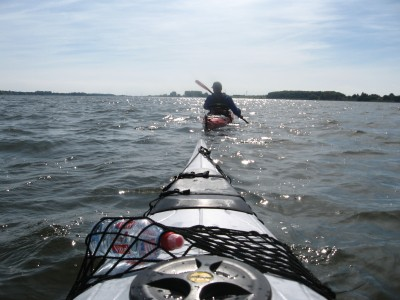
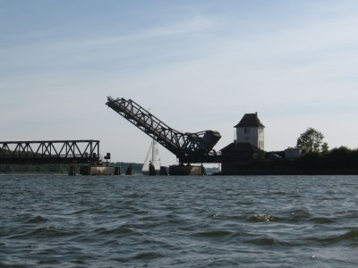
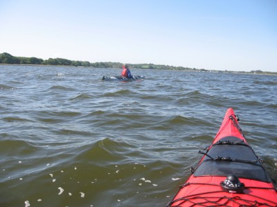
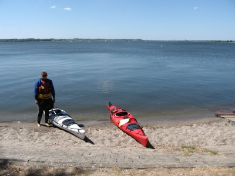
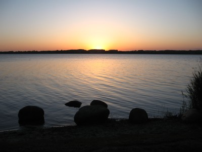
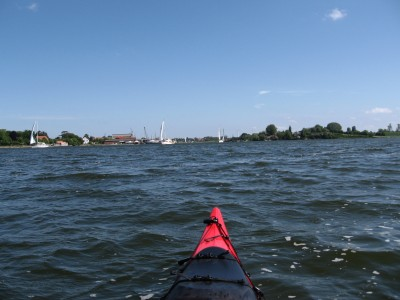

| Home | Kontakt | Steckbrief |
| Wandern/Trekking |
| Klettern/Klettersteige |
| Kanu |
| Fahrradtouren |
| Rucksack-Reisen |
| Touren mit Kindern |
| Wissenswertes |
| Werbung |
Kajaktour auf der SchleiDie Schlei ist ein 42 Kilometer langer flussartiger Schmelzwasserarm der Ostsee, an dessen Ende die Stadt Schleswig liegt. Schleswig liegt zwischen Eckernförde und Flensburg.Freitag 23.05.08Wir kommen gegen 15 Uhr beim Kanuvermieter in Sundsacker an. Der Vermieter befindet sich genau am Fähranleger der Fähre von Sundsacker nach Arnis. Unsere zwei vorbestellten Prijon Kodiak warten schon nebst Paddeln und Spritzdecken auf uns. Wir klären kurz, dass der Verleiher als Pfand unseren Autoschlüssel behält, und parken direkt auf einer Parkfläche neben der Fähre.Da wir die Kentersäcke schon zu Hause gepackt haben, sind die Boote schnell beladen und zu Wasser gelassen. Gegen 16 Uhr geht es los. Das Wetter ist sonnig und warm, und da wir erst einmal die Schlei in Richtung Schleswig fahren wollen hilft uns der Nordostwind ein wenig.  Die ersten Meter auf der Schlei Den ersten Campingplatz gibt es direkt nach 1,5 Kilometern am Ostufer in Winnemark. Nach weiteren 1,5 Kilometern liegt am Westufer der Campingplatz Karschau. Dort müsste man aber die Boote erst über eine Strafle tragen. Bald sehen wir auch die hohen Masten einer Hochspannungsleitung, die wir nach insgesamt 7 Kilometern unterqueren. Zahlreiche Segel- und Motorboote und auch wenige Ausflugsschiffe begleiten uns. Nach der Leitung sieht man die Klappbrücke von Lindaunis. Unmittelbar rechts hinter der Brücke, die eine kombinierte Fahrbahn und Eisenbahntrasse hat, liegt unser Nachtlager. Der Campingplatz Lindaunis, den wir um 18 Uhr nach 2 Stunden Paddelei erreichen.  Die Klappbrücke bei Lindaunis Für 13,80 € dürfen wir dort unsere Boote auf die Wiese legen und bekommen für unser kleines Zelt eine komplette Wohnwagenparzelle zugewiesen. Die nutzen wir auch komplett, um unsere Neoprensachen in der Sonne zu trocknen. Den nahen Campingplatzimbiss und das Restaurant oberhalb an der Strafle ignorieren wir tapfer, und so gibt es Reis mit Gemüse. Auch lecker! Ganz in der Nähe am Lindauer Noor liegt übrigends, das Haus des Landarztes aus der gleichnamigen Fernsehserie vom ZDF. Das schenken wir uns aber. Überhaupt scheint die Gegend hauptsächlich von ZDF Publikum besucht zu werden. Auf dem Campingplatz sind wir weit und breit das einzige Zelt, ansonsten herrschen dort feste Wohnwagenburgen mit Vorzelt vor. Den Altersdurchschnitt senken wir auch ganz massiv. Der Campingplatz ist aber sauber und macht einen guten Eindruck. Samstag, 24.05.08Wir stehen früh auf und sind schon um 9:30 wieder auf dem Wasser. Wind im Rücken, Sonne seitlich und genug Wasser voraus Heute soll unser längster Paddeltag werden. Wir fahren weiter nach Südwesten die Schlei hinunter. Den nächsten Campingplatz gibt es nach 6 Kilometern am Ostufer in Hülsen und nur einen Kilometer weiter am Westufer den nächsten Platz. Die Schlei wird enger, und man muss etwas auf die Sportboote aufpassen. Am Missunder Noor gibt es zwei weitere Campingplätze und auch einen DKV Kanuclub. Wir fahren nun in die Grofle Breite und legen direkt am Ostufer bei Burg an einem kleinen Sandstrand an. In der Ferne sieht man den Dom von Schleswig. Bis hier sind es 10 Kilometer vom Übernachtungsplatz, und der R¸ckenwind hat uns heimlich geholfen. Der Wind ist aber stärker geworden, und da wir am Sonntag wieder beim Verleiher zurück sein wollen, beschlieflen wir, hier umzukehren.  Unser Umkehrpunkt an der Großen Breite Bis nach Schleswig wären es noch 9 Kilometer über die Grofle und Kleine Breite. Wir hätten uns dann aber vom Verleiher abholen lassen müssen. Wir kämpfen uns dicht am Ostufer zurück. Leider kommt der Wind aber genau von vorne, so dass das Ufer keinen ausreichenden Schutz bietet. Der Eisenbahndamm bei Lindau wirkt aber für uns als guter Wellenbrecher, und auch die nachfolgende Landzunge, auf der der Strommast der Hochspannungsleitung steht, nutzen wir aus. Wir erreichen um 18 Uhr mit ziemlich langen Armen den Campingplatz in Winnemark, von dem wir es nur noch 1,5 Kilometer zu unserem Verleiher haben. Wir fahren deswegen so weit die Schlei hoch, weil der Wind für den Sonntag eher noch stärker werden soll. Außerdem halten wir uns so die Option frei, an Arnis vorbei nach Kappeln zu paddeln und uns das Städtchen anzusehen.  Sonnenuntergang am Campingplatz Winnemark Auch dieser Campingplatz ist eher in der Hand von Stammgästen, die es nicht gerade wohlwollend zu Kenntnis nehmen, dass wir schon auf ihrer Sonnenuntergangsbetrachtungsbank sitzen. So gibt es außer einem "Moin" auch keine weitere Kommunikation. Gesprächiger ist da schon der Campingplatzwart, aber auch er erzählt uns nicht, dass man für seine Duschen noch DM-Stücke benötigt. Also wird kalt geduscht. Soll ja abhärten. Sonntag, 25.05.08Aua. Mir tut die Schulter weh, Tanja die Arme. Die 28 Kilometer gestern mit 19 Kilometern Gegenwind waren wohl doch etwas viel. Wir bleiben so lang wie möglich im Zelt und beschreiben uns die verschiedenen Schmerzen. Als die Sonne aber unser Zelt entdeckt, müssen wir raus. Die Sanitäranlagen des Campingplatzes laden nicht gerade zur Visite ein. Das Sightseeing in Kappeln überlassen wir auch anderen, und so fahren wir gegen halb 12 nach einem guten Müslifrühstück zur Fähre nach Arnis und geben in Sundsacker unsere Boote ab. 60 Euro will der Verleiher, was ein durchaus fairer Preis für die fast neuen Boote ist. Ein sonniges Wochenende findet im dortigen Biergarten seinen Abschluss. Zurück in Arnis Informationen: Unser Bootsvermieter Campingplatz Lindaunis Die Wassersport Wanderkarte Nordwest von Jübermann deckt den Bereich der Schlei ab |